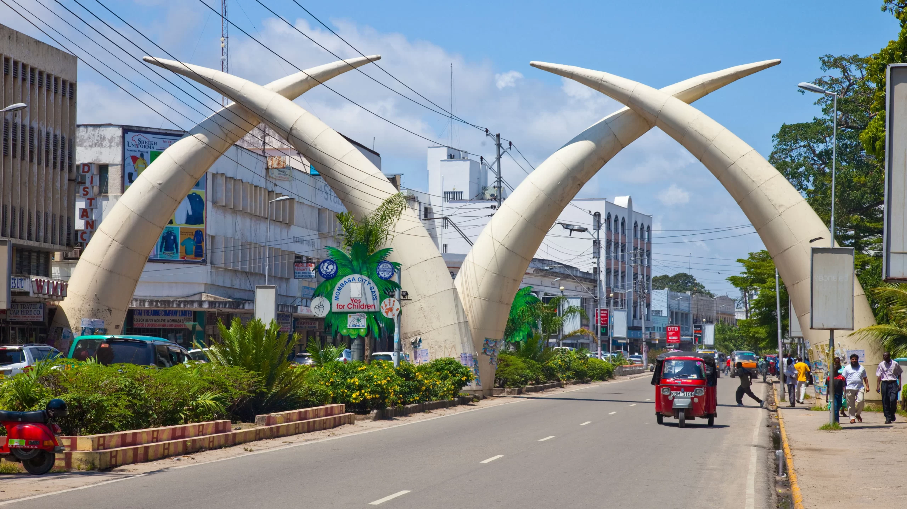

YouTube Redesign
A UX/UI case study on simplifying navigation and unifying short-form & long-form video experiences.

Project Overview
This case study explores how YouTube’s user experience can be improved by addressing navigation complexity and the split between Shorts and long-form videos.
Problem Statement
Users often struggle with scattered navigation and confusion between Shorts and standard videos. The redesign aims to streamline navigation and unify the viewing experience.
Design Process
- Research: Gathered insights from user testing and competitor analysis.
- Wireframes: Created initial layouts for homepage and navigation flow.
- Prototyping: Designed interactive mockups in Figma.
- User Testing: Iterated designs based on feedback.


Final Design
The final solution introduces a simplified bottom navigation bar, a unified video player experience, and a homepage optimized for both Shorts and long-form content.

Reflection
This project taught me how to balance simplicity with feature-rich design. If I had more time, I would explore accessibility improvements and personalization features.
← Back to Case Studies